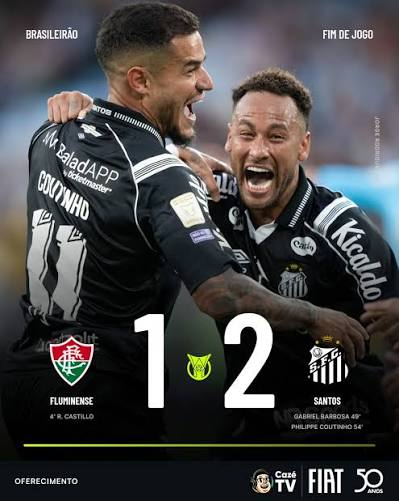

Uma vitória para a história

Santos vence o Fluminense
O Santos conquistou uma vitória importante contra o Fluminense, levando alegria à torcida e mostrando a força da camisa alvinegra.
A partida foi marcada pela emoção, pela disputa dentro de campo e pelo apoio dos torcedores. Uma vitória que merece ser lembrada!
Resumo da partida
2
Gols do Santos
1
Gol do adversário
3
Gols na partida